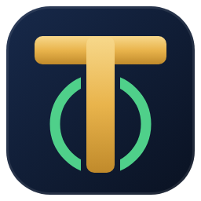

Teknik OdaFikirler ve sıradaki işler
Son güncelleme: 19 Kasım 2026Sırayı sizin görüşleriniz belirliyor. Aşağıdaki işlerden istediğine oy ver; aynı tarayıcıdan bir madde için bir oy sayılır. Oy hesap istemez, kimlik bırakmaz: yalnız "bu madde için bir oy" sayısı olarak tutulur.
Sırada ne var?
- Transfer radarı
Piyasadaki teklifleri ve rakiplerin hamlelerini gösterir.
- Kulüp tarihi
Kariyerindeki kupalar, rekorlar ve efsaneler.
- Kısa liste aktarımı
Gözlem listeni FM'in kısa listesine taşır.
- FM'de yeni karar anları
Sözleşme yenilerken, teklif hazırlarken ve gençler gelince FM'in içinde kart.
- Epic ve Game Pass
Bu sürümlerde canlı doğrulama.
Bu liste söz değil, sıra tahminidir; oylar sırayı etkiler, tarih vermez.
Başka bir fikrin mi var?
Listede olmayan bir şey istiyorsan yaz; her mesaja bakıyoruz. Önce bir cümleyle neyi, hangi anda istediğini anlat.
Ideas and what is next
Last updated: 19 November 2026Your feedback sets the order. Vote on whichever of the items below you want; one vote per item is counted from the same browser. A vote needs no account and leaves no identity: it is kept only as a count of "one vote for this item".
What's next?
- Transfer radar
Shows the offers on the market and your rivals' moves.
- Club history
The trophies, records and legends of your career.
- Shortlist export
Moves your scouting list to FM's shortlist.
- More moments inside FM
Cards inside FM when you renew a contract, prepare a bid or meet your new youngsters.
- Epic and Game Pass
Live verification on these versions.
This list is not a promise, only a guess at the order; votes shape the order and do not set dates.
Got another idea?
If you want something that is not on the list, write to us; we read every message. Start with one sentence on what you want and at which moment.
Ideias e próximos passos
Última atualização: 19 de novembro de 2026O retorno de vocês define a ordem. Vote no que quiser entre os itens abaixo; conta um voto por item no mesmo navegador. O voto não pede conta e não deixa identidade: fica guardado apenas como a contagem de "um voto para este item".
O que vem por aí?
- Radar de transferências
Mostra as propostas no mercado e os movimentos dos rivais.
- História do clube
Os troféus, recordes e lendas da sua carreira.
- Exportar lista
Leva sua lista de observação para a lista de observação do FM.
- Mais momentos dentro do FM
Cartões dentro do FM ao renovar contratos, preparar propostas e receber os novos jovens.
- Epic e Game Pass
Verificação ao vivo nessas versões.
Esta lista não é uma promessa, apenas uma estimativa da ordem; os votos influenciam a ordem e não definem datas.
Tem outra ideia?
Se quiser algo que não está na lista, escreva; lemos todas as mensagens. Comece com uma frase sobre o que você quer e em que momento.
Ide dan rencana berikutnya
Terakhir diperbarui: 19 November 2026Masukanmu menentukan urutannya. Beri suara untuk butir mana pun di bawah yang kamu inginkan; dari browser yang sama, tiap butir dihitung satu suara. Memberi suara tidak perlu akun dan tidak meninggalkan identitas: yang disimpan hanya hitungan "satu suara untuk butir ini".
Apa selanjutnya?
- Radar transfer
Menampilkan tawaran di bursa dan langkah para pesaingmu.
- Sejarah klub
Trofi, rekor, dan legenda sepanjang kariermu.
- Ekspor ke daftar pantauan
Memindahkan daftar pemanduan bakatmu ke daftar pantauan FM.
- Lebih banyak momen di dalam FM
Kartu di dalam FM saat kamu memperpanjang kontrak, menyiapkan tawaran, atau bertemu pemain muda barumu.
- Epic dan Game Pass
Verifikasi langsung di versi-versi ini.
Daftar ini bukan janji, hanya perkiraan urutan; suara memengaruhi urutan dan tidak menentukan tanggal.
Punya ide lain?
Kalau kamu menginginkan sesuatu yang tidak ada di daftar, tulis ke kami; setiap pesan kami baca. Mulai dengan satu kalimat: apa yang kamu inginkan dan pada momen apa.
Ideen und was als Nächstes kommt
Zuletzt aktualisiert: 19. November 2026Dein Feedback bestimmt die Reihenfolge. Stimm für die Punkte unten ab, die du dir wünschst; aus demselben Browser zählt pro Punkt eine Stimme. Eine Stimme braucht kein Konto und hinterlässt keine Identität: Gespeichert wird nur die Zahl „eine Stimme für diesen Punkt“.
Was kommt als Nächstes?
- Transferradar
Zeigt die Angebote auf dem Markt und die Schritte deiner Konkurrenten.
- Vereinsgeschichte
Die Titel, Rekorde und Legenden deiner Karriere.
- Export in die Beobachtungsliste
Überträgt deine Scouting-Liste in die Beobachtungsliste von FM.
- Mehr Momente in FM
Karten in FM, wenn du einen Vertrag verlängerst, ein Angebot vorbereitest oder deine neuen Jugendspieler kennenlernst.
- Epic und Game Pass
Live-Überprüfung auf diesen Versionen.
Diese Liste ist kein Versprechen, nur eine Einschätzung der Reihenfolge; Stimmen beeinflussen die Reihenfolge und legen keine Termine fest.
Hast du eine andere Idee?
Wenn du dir etwas wünschst, das nicht auf der Liste steht, schreib uns; wir lesen jede Nachricht. Fang mit einem Satz an: was du möchtest und in welchem Moment.
Idées et suite du programme
Dernière mise à jour : 19 novembre 2026Vos retours fixent l'ordre. Votez pour les points ci-dessous qui vous intéressent ; depuis un même navigateur, un seul vote par point est compté. Voter ne demande aucun compte et ne laisse aucune identité : seul le décompte « un vote pour ce point » est conservé.
Et ensuite ?
- Radar des transferts
Affiche les offres sur le marché et les mouvements de vos rivaux.
- Histoire du club
Les trophées, les records et les légendes de votre carrière.
- Export vers la liste de suivi
Envoie votre liste de recrutement dans la liste de suivi de FM.
- Plus de moments dans FM
Des cartes dans FM quand vous prolongez un contrat, préparez une offre ou découvrez vos nouveaux jeunes.
- Epic et Game Pass
Vérification en direct sur ces versions.
Cette liste n'est pas une promesse, seulement une estimation de l'ordre ; les votes influencent l'ordre et ne fixent aucune date.
Une autre idée ?
Si vous voulez quelque chose qui n'est pas dans la liste, écrivez-nous ; nous lisons chaque message. Commencez par une phrase : ce que vous voulez et à quel moment.
Ideas y lo que viene
Última actualización: 19 de noviembre de 2026Tus comentarios marcan el orden. Vota los puntos de abajo que más te interesen; desde el mismo navegador se cuenta un voto por punto. Votar no necesita cuenta ni deja ninguna identidad: solo se guarda el recuento de "un voto para este punto".
¿Qué viene ahora?
- Radar de fichajes
Muestra las ofertas del mercado y los movimientos de tus rivales.
- Historia del club
Los títulos, récords y leyendas de tu carrera.
- Exportar a la lista de seguimiento
Pasa tu lista de ojeo a la lista de seguimiento de FM.
- Más momentos dentro de FM
Tarjetas dentro de FM cuando renuevas un contrato, preparas una oferta o conoces a tus nuevos juveniles.
- Epic y Game Pass
Verificación en vivo en estas versiones.
Esta lista no es una promesa, solo una estimación del orden; los votos influyen en el orden y no fijan fechas.
¿Tienes otra idea?
Si quieres algo que no está en la lista, escríbenos; leemos todos los mensajes. Empieza con una frase: qué quieres y en qué momento.
Idee e prossimi passi
Ultimo aggiornamento: 19 novembre 2026Sono i tuoi riscontri a decidere l'ordine. Vota le voci qui sotto che ti interessano; dallo stesso browser viene contato un voto per voce. Per votare non serve un account e non resta alcuna identità: si conserva solo il conteggio "un voto per questa voce".
Cosa c'è in arrivo?
- Radar trasferimenti
Mostra le offerte sul mercato e le mosse delle tue rivali.
- Storia del club
I trofei, i record e le leggende della tua carriera.
- Esportazione nella lista osservati
Porta la tua lista di scouting nella lista osservati di FM.
- Più momenti dentro FM
Schede dentro FM quando rinnovi un contratto, prepari un'offerta o conosci i tuoi nuovi giovani.
- Epic e Game Pass
Verifica dal vivo su queste versioni.
Questa lista non è una promessa, solo una stima dell'ordine; i voti orientano l'ordine e non fissano date.
Hai un'altra idea?
Se vuoi qualcosa che non è in lista, scrivici; leggiamo ogni messaggio. Comincia con una frase: cosa vuoi e in quale momento.